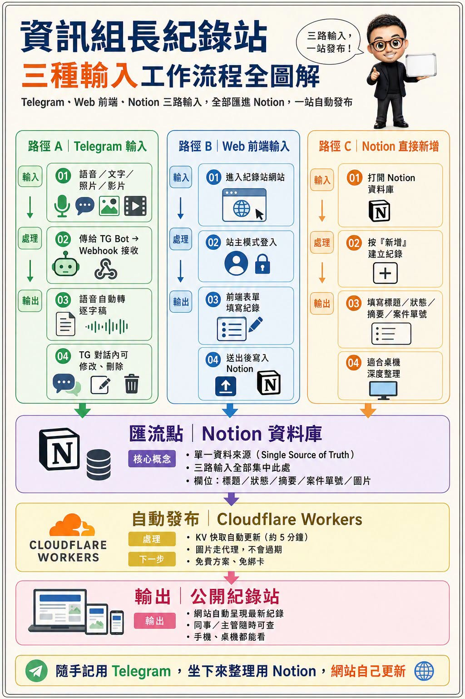

Facebook｜資訊組長紀錄站：Telegram 一句話入庫 Notion，再用 Cloudflare Workers 自動發布

為什麼保存
這則貼文切中教育現場資訊組長、MIS、校內數位支援者常見的痛點：事情很多，但每件都太零碎，等到成果報告或年度盤點時，反而難以還原自己做了什麼。
它的重點不是「再開一個表單」，而是把紀錄入口降到最低摩擦：走路時對 Telegram bot 講一句話，系統自動轉文字、入庫、上站；坐在桌前時可用 Web 表單；週末要補摘要、狀態或案件單號時，再直接進 Notion 深度整理。
貼文可見重點
Facebook 貼文由陳乃誠發布，貼文標示「AI 內容」，並附 GitHub repo：`hk6429/notion-worklog-starter`。貼文核心主張如下：
- 資訊組長最大的委屈不是事情多，而是「做完沒人知道」。
- 記錄斷掉常常不是意志力問題，而是輸入摩擦太高。
- 工作流應把記錄成本壓到「講一句話」。
- 三個入口匯入同一個 Notion 資料庫：Telegram、Web 前端、Notion 直接新增。
- Cloudflare Workers 定期同步為公開網站，讓同事或主管可用網址查看。
附圖標題為「資訊組長紀錄站：三種輸入工作流程全圖解」，視覺上把流程分成三路：
| 路徑 | 使用情境 | 流程 |
|---|---|---|
| Telegram 輸入 | 走路、現場處理剛完成時 | 語音／文字／照片／影片 → TG Bot webhook 接收 → 語音自動轉逐字稿 → 對話內可修改或刪除 |
| Web 前端輸入 | 坐在座位上補紀錄 | 進入紀錄站 → 站主模式登入 → 表單填寫 → 送入 Notion |
| Notion 直接新增 | 週末或深度整理 | 開 Notion 資料庫 → 新增紀錄 → 補標題、狀態、摘要、案件單號 |
三路最後匯流到 Notion 資料庫，作為 single source of truth，再由 Cloudflare Workers/KV 自動更新公開紀錄站。
查核：GitHub repo 實際內容
GitHub API 與 README 查核顯示，`hk6429/notion-worklog-starter` 是公開 repo，描述為「Notion 當 CMS 的公開工作紀錄站起手式：60 秒自動發布＋Telegram 隨手紀錄＋零 token 訊息解析（Cloudflare Workers 免費層）」。查核時 metadata 可見：
- 建立時間：2026-08-01。
- 主要語言：TypeScript、CSS、JavaScript。
- License：GitHub metadata 顯示 MIT License。
- 主要元件：Notion REST API、Next.js / Cloudflare Workers、Workers KV、Telegram bot webhook、可選 Groq Whisper 語音轉文字。
README 中的能力和貼文大致一致：Notion 作 CMS、Telegram 可接文字／語音／照片、60 秒內連傳可合併同一筆、`/list` 可在 Telegram 對話中改標題／發布／刪除，並用規則式解析「今天／明天／8/5」等日期與分類字眼，因此不需要 LLM token 做訊息分類。
官方/可靠來源對照
- Notion 官方文件確認 Notion API 可用來操作 pages、databases、blocks，適合做 CMS 後台。
- Telegram Bot API 官方文件確認 bot 可透過 HTTP-based API 接收訊息、語音、照片等互動資料。
- Cloudflare Workers 與 KV 官方文件確認 Workers 可作為 edge/serverless 執行環境，KV 可作 key-value 儲存與快取；但實際免費額度、請求量與限制會隨 Cloudflare 方案調整，部署前仍應看最新 pricing。
- Groq speech-to-text 文件可作語音逐字稿來源；若不使用語音功能，README 也允許跳過 Groq API key。
對欒帥的可用改寫
這個 pattern 很適合改造成「課程/行政/專案工作留痕系統」：
- 先定義唯一資料庫：事件標題、日期、地點/單位、類別、狀態、摘要、附件、是否公開。
- 把最常發生的輸入場景接到同一庫：LINE/Telegram 語音、表單、Notion/Sheets 後台。
- 把公開展示與私密資料分層：公開站只放可揭露的成果；設備序號、個資、內部 IP、未修復漏洞留在私密欄位或不匯出。
- 讓網站自動長出時間軸、分類頁、搜尋與週/月彙整，年底報告就不再從空白文件開始。
風險與限制
- 貼文說「免費方案、連信用卡都不用綁」可視為 repo 設計目標與當下經驗；實際用量、Cloudflare/Notion/Groq 免費額度與付款要求仍須以各服務最新條款為準。
- 若接入校務或行政工作，公開站務必過濾姓名、帳號、設備序號、內部 IP、網路拓樸、弱點資訊與未定案採購。
- 語音轉文字會把工作內容傳到第三方服務；涉及學生、教師或校務個資時，要先界定可傳輸範圍。
- Telegram bot webhook 與 Notion token 都屬敏感憑證，應放在 Cloudflare secrets 或本地 `.env`，不可提交到 repo。
- 「AI 內容」標示代表貼文/圖片可能使用生成式 AI 輔助，不應把流程圖視為實機截圖；技術可行性仍以 repo 與官方文件為準。
相關連結
- Facebook share：https://www.facebook.com/share/p/1EvrFy5pEt/
- Facebook canonical：https://www.facebook.com/hk6429/posts/pfbid0eTTNCoa2uY9hcQ5yjxJKxRbsxhJcuW2MHZxc7FomSLMWi75CDvx2LUnEaNzEaxBNl
- GitHub repo：https://github.com/hk6429/notion-worklog-starter
- README：https://raw.githubusercontent.com/hk6429/notion-worklog-starter/main/README.md
- Notion API：https://developers.notion.com/reference/intro
- Telegram Bot API：https://core.telegram.org/bots/api
- Cloudflare Workers pricing：https://developers.cloudflare.com/workers/platform/pricing/
- Cloudflare KV：https://developers.cloudflare.com/kv/
- Groq speech-to-text：https://console.groq.com/docs/speech-to-text